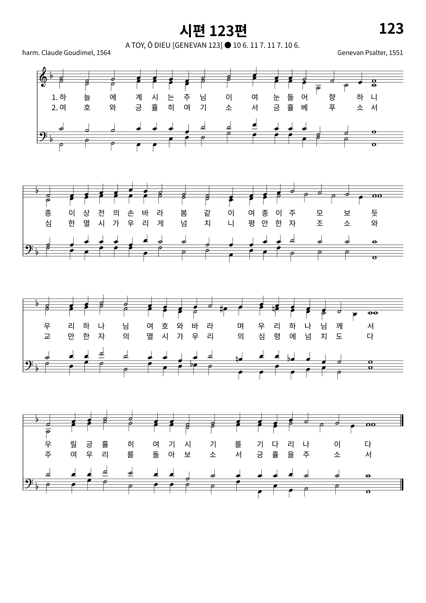

Psalm 123
A TOY, Ô DIEU [GENEVAN 123] · 10 6. 11 7. 11 7. 10 6.
English title: To Thee, O Lord Who Dwellest in the Height
Tune: Genevan Psalter, 1551 · Harmony: Claude Goudimel, 1564 · Lyrics: Korean adaptation of Psalm 123 from the Korean Revised Version (AI draft adaptation · not yet theologically reviewed) · 2 stanzas
Score PDF MusicXML (for printing) MusicXML (for accompaniment, with prelude and repeats) Read Psalm 123 (Korean Revised Version)
Score
← Psalm 122 ListAccompaniment (in preparation)Psalm 124 →
Lyrics (Korean)
Stanza 1
하늘에 계시는 주님이여
눈 들어 향하니
종이 상전의 손 바라봄 같이
여종이 주모 보듯
우리 하나님 여호와 바라며
우리 하나님께서
우릴 긍휼히 여기시기를
기다리나이다
하늘에 계시는 주님이여
눈 들어 향하니
종이 상전의 손 바라봄 같이
여종이 주모 보듯
우리 하나님 여호와 바라며
우리 하나님께서
우릴 긍휼히 여기시기를
기다리나이다
Stanza 2
여호와 긍휼히 여기소서
긍휼 베푸소서
심한 멸시가 우리게 넘치니
평안한 자 조소와
교만한 자의 멸시가 우리의
심령에 넘치도다
주여 우리를 돌아보소서
긍휼을 주소서
여호와 긍휼히 여기소서
긍휼 베푸소서
심한 멸시가 우리게 넘치니
평안한 자 조소와
교만한 자의 멸시가 우리의
심령에 넘치도다
주여 우리를 돌아보소서
긍휼을 주소서